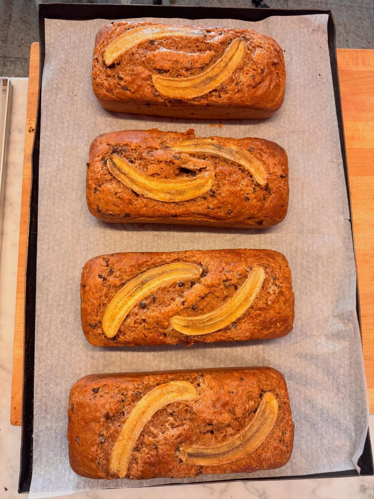
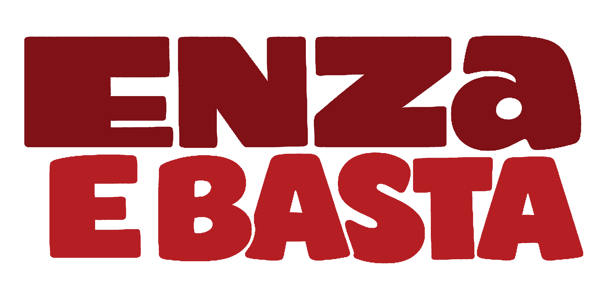
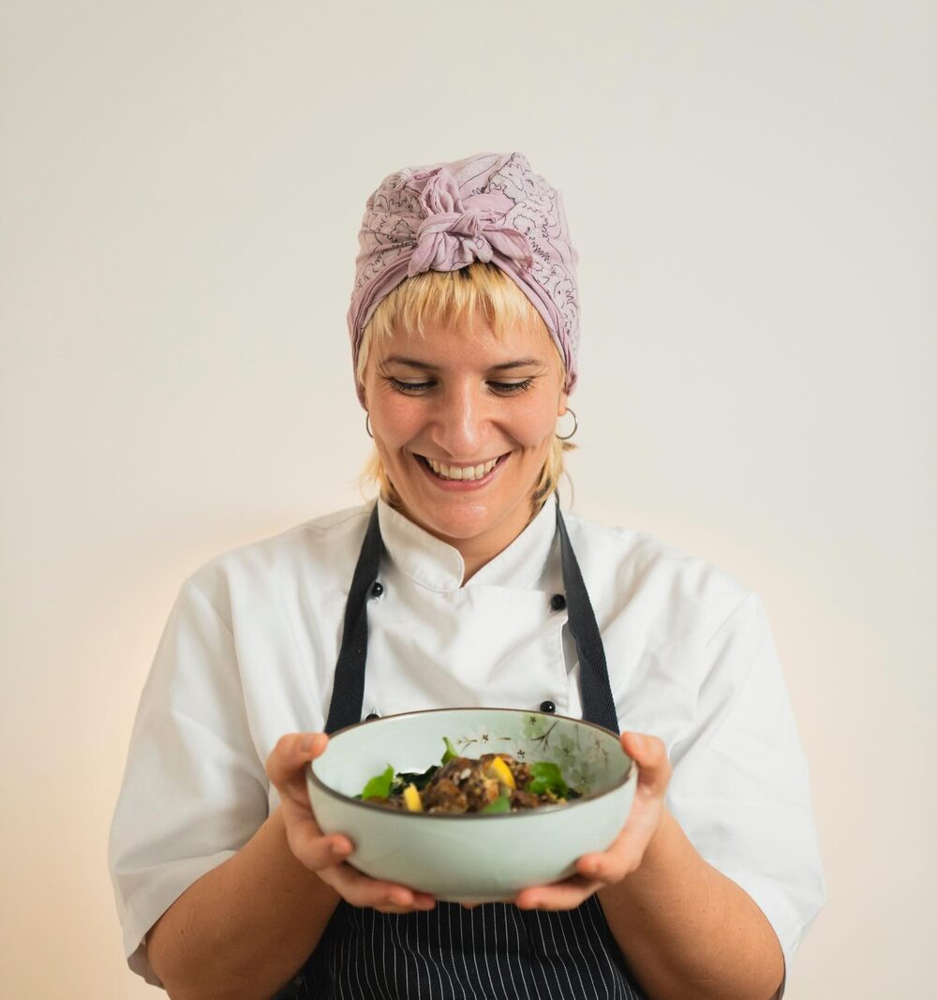
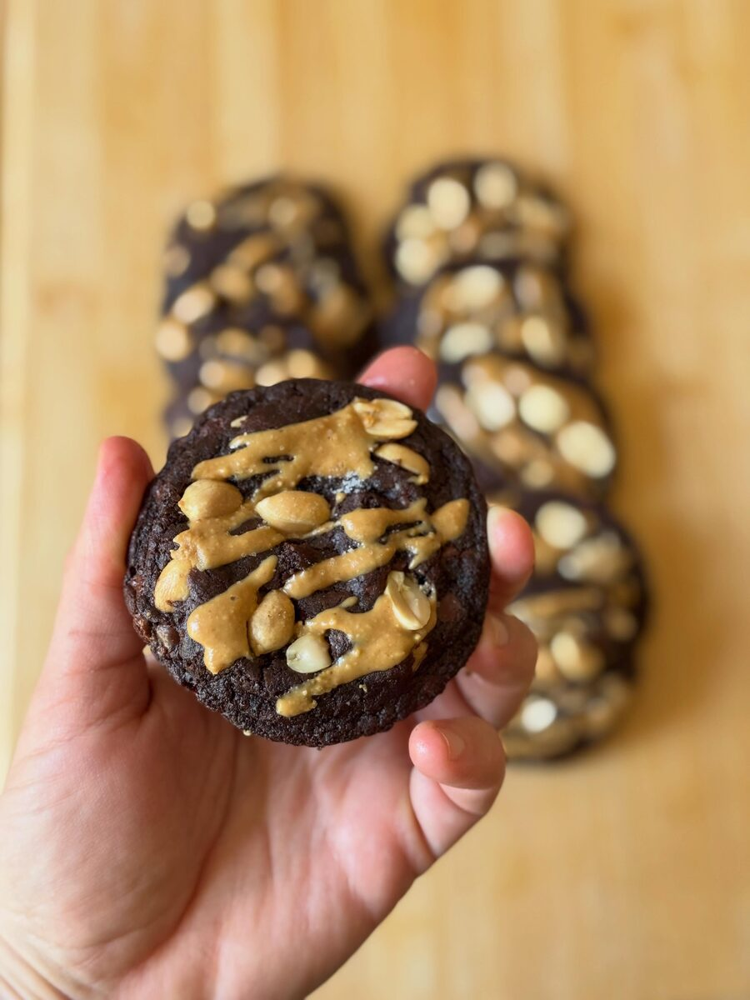
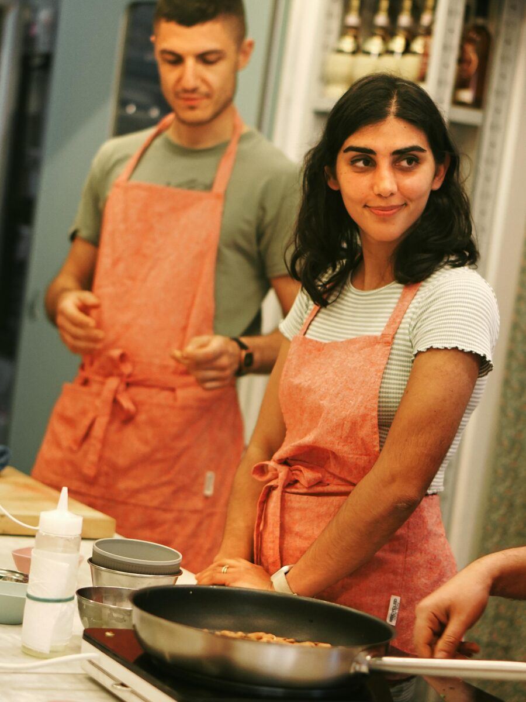
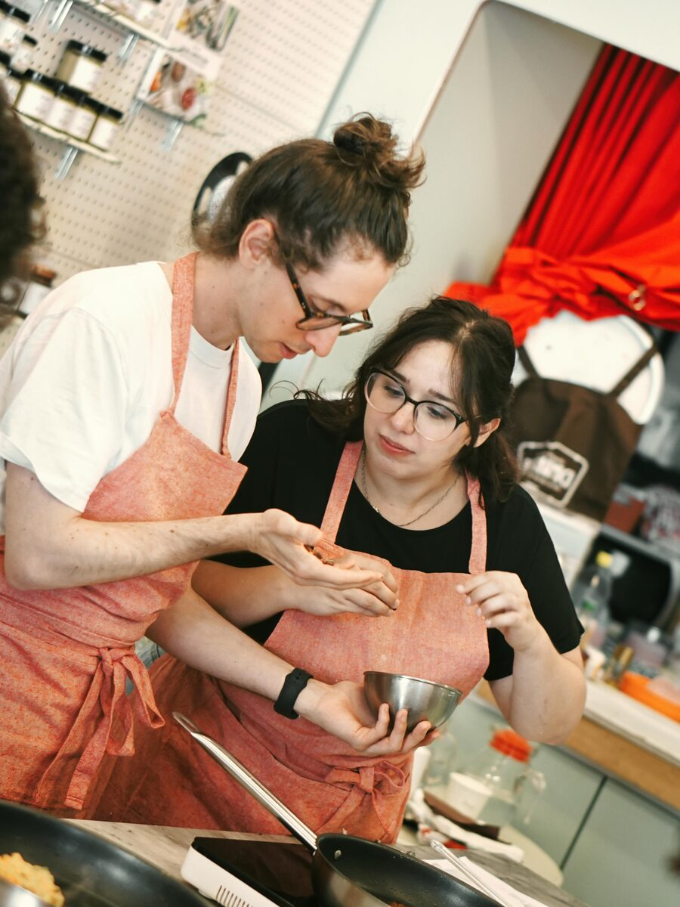
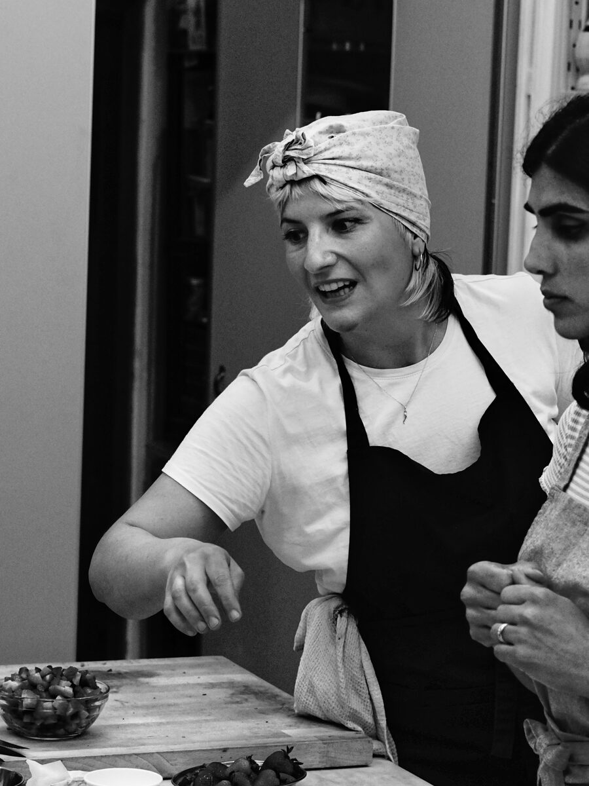

Corsi & Consulenze
Ti insegno i vegetali: corsi di cucina, menu engineering e consulenze per locali e brand. Imparare facendo, ebbasta.
Chef vegetale · Corsi · Consulenze · Eventi

Cucino verdure e venero i carboidrati. Anima vesuviana in movimento: porto in tavola vegetali con carattere — anche per chi “la verdura no”. Corsi, consulenze ed eventi. Ebbasta.
Scrivimi →

01 — Chi Sono
Ciao! Sono Enza De Iorio, cuoca specializzata in cucina vegetariana e vegana. Dopo essermi formata in giro per l'Italia in alcuni tra i migliori ristoranti di cucina vegetale, ho scelto Firenze per tenere corsi di cucina veg per appassionatə e professionistə.
Sono nata e cresciuta alle pendici del Vesuvio, in provincia di Napoli, dove mi sono laureata in Relazioni Internazionali e Diplomatiche. Sono diventata vegetariana in adolescenza e, durante gli studi — lavorando come tantə studentə — mi sono innamorata della cucina, decidendo di farne il mio mestiere.
Da sempre affascinata dal pane, dai dolci da forno e dai carboidrati in ogni loro forma, ho approfondito il mondo dei panificati sempre in chiave vegetale, divertendomi a trasformare torte e biscotti tradizionali in versione vegana.
02 — Progetti / Servizi
Scegli come portarmi in cucina. Al resto penso io.

Ti insegno i vegetali: corsi di cucina, menu engineering e consulenze per locali e brand. Imparare facendo, ebbasta.

Cene, feste e ricorrenze cucite su di te. Menu vegetale (o quasi) su misura, gusto che fa festa, servizio incluso.

Show cooking, catering vegetale e team building che si mangiano. Energia e gusto per il tuo team, zero noia.
03 — Biografia

Nata e cresciuta in provincia di Napoli, alle pendici del Vesuvio. Mi laureo in Relazioni Internazionali e Diplomatiche e divento vegetariana già in adolescenza.
Durante gli studi mi innamoro della cucina. Per imparare davvero il mestiere lascio la mia città: le prime esperienze sono a Roma.
Formazione rigorosa al ristorante “Joia”, punto di riferimento dell'alta cucina vegetale.
Cresco al “Maggese” in Toscana e all'hotel interamente vegano “La Vimea” in Süd Tirol, tra stagioni al mare e tante realtà diverse.
Al “Forno Mangiapane” affino le basi della panificazione: pane e dolci da forno, in chiave vegana. Un alimento antico che mi riempie di meraviglia.
Mi stabilisco a Firenze e lancio i miei corsi di cucina vegetale. Tante idee da far fiorire — ebbasta.
Corsi di cucina
Dal 2025, a Firenze, restituisco qualcosa della mia esperienza: corsi di cucina vegetale che rispecchiano la mia visione — curiosità, passione, professionalità e sostenibilità, umana e delle materie prime.
Un luogo fisico dove far andare le mani e il cuore, conoscere persone nuove e condividere ricette (e battute): convivialità vera, offline. Approccio rigoroso ma adattabile, preciso ma popolare, giocoso.
Dalla pasta fresca vegana ai dolci, passando per le proteine vegetali, la colazione da preparare insieme o gli approfondimenti sull'alimentazione veg nello sport — affiancata da una nutrizionista — nelle lezioni riverso tutta la cura per ciò che mi appassiona. Ho tantissime idee e non vedo l'ora di farle fiorire!
04 — Contatti
Hai un evento, un'idea o solo fame di qualcosa di buono? Scrivimi, rispondo a tutti.
ə